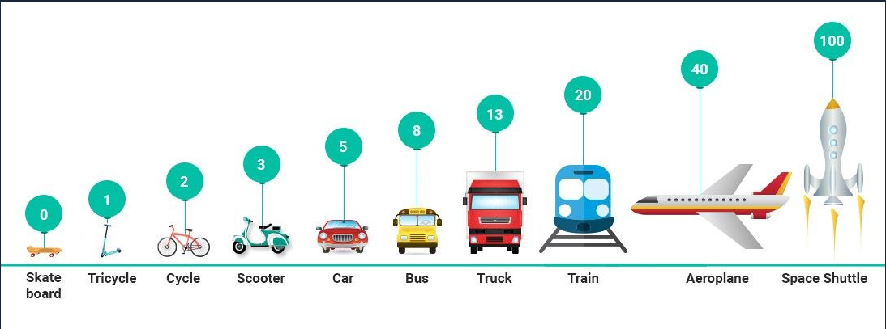
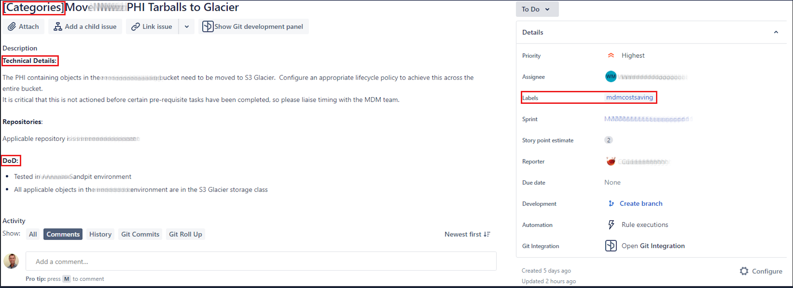
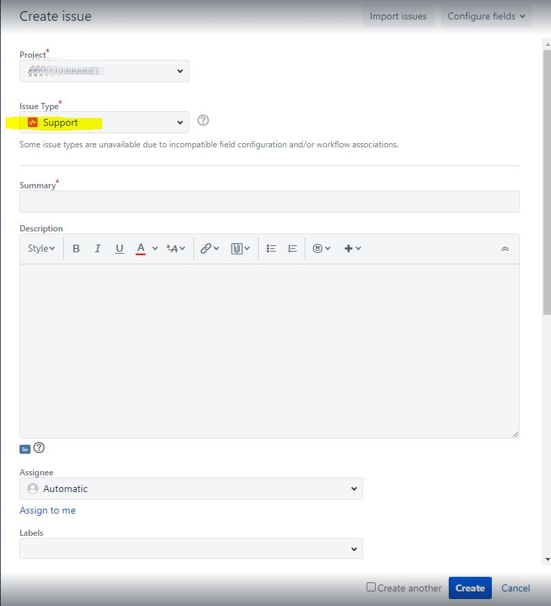

Development Processes
- Introduction
- Agile Methodologies
- Initiatives, Epics, Stories, Tasks and Spikes
- DE Team Ceremonies Explained
- Sprint Planning
- Daily Standup
- Sprint Retrospective
- Backlog Refinement/Grooming
- Story Points
- Definitions of Done
- Sprint Workflow
- How to write a Story/Task
- Support
In this section of the handbook we outline our standard development processes i.e. "how" we work.
Introduction
This page will give you an idea at a high level of how the team operates on a day-to-day basis, weekly, and near future. We welcome any input to improve our processes, we strive to be as adaptable and flexible as possible to make the team the best we can be.
Below we will outline the basic structure and processes of the team.
The Team
Our main responsibility is the design, implementation, support and maintenance of Harrison.ai’s world-leading data engineering platforms. The goal of this platform is to provide Harrison.ai’s AI engineers with an efficient method of creating world-class AI models from a vast array of data sources. The platform provides a seamless experience for gathering and labeling data acquired from various sources as well as training and evaluating new models.
We define, understand, and translate the requirements of our stakeholders into well-designed technical solutions. Working in partnership with infrastructure engineers within the Harrison.ai data engineering team, you will build high-quality software that powers our data labeling efforts, data processing pipelines, provides controlled API access to our data lake, and manages our various AI model training infrastructure.
We are a small team that consists of AI Engineers and AWS Infrastructure team members, the team is getting help from the Deliver Manager that plays the role of managing the processes of the team, running the SCRUM Ceremonies, and anything else to support the team to deliver the Sprint outcome and more. There is no Scrum Master or Product Owner because of the structure of our team within the business. For big deliverables, the business will indicate to us what the priority is, we as a team will decide within those deliverables what has to be prioritized via team discussions.
What Methodology/Framework are we using?
For now, we going with SCRUM, the sprints keep the team focused, and having a few sprints planned ahead gives us the visibility to manage the impact of new requirements getting prioritized.
What does a typical day of the team look like
In the morning the team kicks of their day with a daily stand-up, this set’s us up for the rest of the day what the team will be doing and also if there is anything that blocks a team member. We can address the blocking concern if it is something that a team member can assist. If the issue is more complicated and someone needs help outside the team, we can address this in the meeting, take action, and schedule something outside the daily stand-up.
The team is available on MS Teams for any questions or feedback. We do have certain channels set up for any discussion based on certain groups (Support, Data Engineering General, Data Migration, etc.). This will enable us to make sure the team is across any discussions and kept in the loop, this is beneficial in many ways because someone might have knowledge or feedback. There are obvious ad-hoc/personal chats that can be done via personal communication.
What does a typical week look like?
We will have a Sprint Planning session, where we get together to see if any new items have been added to the product backlog and how we can accommodate these priorities into our sprint backlog. Each team member will need to write Jira tickets (Tasks/Stories) according to the ticket writing template. Once the ticket(s) have been written, added to the backlog, and prioritized we will bring these new tickets into our sprint planning session to be estimated by the team by using story points. By creating the tickets using the template we will be in a position to estimate more accurately. In this session we will also see the impact of the newly added tickets into our sprint backlog, each team member has a certain velocity based on their output. Some team members will be more involved in meetings and other commitments, hence their velocity will be less than someone that is fully dedicated to the sprint. We usually accommodate a few story points as a buffer for meetings etc.
What happens after 2 weeks or so?
You will see Sprint starting to end, after the sprint end we will conduct a RETRO to see what we did well and what we should do better. This enables the team to adapt to change better because certain company processes do change over time, so should our ways of working. The outcome of these RETROS gives the Delivery Manager a sense of where the team is at and to see if he/she needs to change things how we operate as a team.
Agile Methodologies
We strive to adhere to agile methodologies as much as possible, yet are not agile purists. From the values of the agile manifesto:
- Individuals and interactions over processes and tools
- Working software over comprehensive documentation
- Customer collaboration over contract negotiation
- Responding to change over following a plan
Our team prioritise these values in the following order:
- Customer collaboration over contract negotiation
- Responding to change over following a plan
- Individuals and interactions over processes and tools
- Working software over comprehensive documentation
As the manifesto itself states that the items on the right are not valued or important, but the items on the left are valued more. Similarly as a team that does not mean that working software or documentation are not important compared with customer collaboration, as a highly regulated medical device development company these values are mandatory. It means that we need to ensure we are collaborative, dynamic and responsive in order to build high quality medical device products.
From a day to day perspective we employ the core agile ceremonies, such as daily stand-ups, sprint planning and ticket grooming and retrospectives. During sprint planning sessions we need to ensure that our planning reflects the current needs of the team and our customers in the context of broader project and release goals. By being collaborative and responsive to change we can walk this tight-rope between meeting short, medium and long term goals.
Initiatives, Epics, Stories, Tasks and Spikes
When planning our work we use the agile concepts of Initiatives, Epics, Tasks and Spikes. Those familiar with agile techniques will note that this is not the full complement of task types available within agile but from experience we have settled on these being the most useful for our purposes. Working from the top of the hierarchical structure the task types are as follows:
| Initiatives | A collection of epics that contribute to a common goal; this is often, but not necessarily a specific software release. | |
| Epics | Larger bodies of work that can be broken down into smaller tasks; epics typically group a number of requirements into a logical body of work. | |
| Stories | A feature or requirement that may or may not have individual tasks that need to be done to satisfy the requirement. A story can describe work to be done to more than one library/module in a code base. Stories are often written from the perspective of an end user or the need defined in the feature / requirement. "Story Points" are also applied to stories. | |
 | Tasks | The piece of work that needs to be done. Tasks require a measurable definition of done, "story point" estimates (really should be called task points....), a priority and ideally a completion or due date. If appropriate tasks can be broken into Sub-Tasks; this is typically done if a ticket number is required for a discrete body of work and that work is still described within the original story point estimate. It is usually preferred to create another related task as opposed to creating sub-tasks. |
 | Spikes | A piece of exploratory work, often used as a means of gathering requirements for a new set of tasks or to assist in determining a later action or path. Spikes often have less clearly defined definitions of done, or the definition of done may be to create / inform later tasks. |
DE Team Ceremonies Explained
Introduction Scrum ceremonies are important elements of the agile software delivery process. They are not just meetings for the sake of having meetings. Rather, these scrum ceremonies provide the framework for teams to get work done in a structured manner, help to set expectations, empower the team to collaborate effectively, and ultimately drive results. If they’re not managed appropriately, however, they can overwhelm calendars and drown out the value they are intended to provide.
These scrum ceremonies fulfill & enable several core/original principles. Often, when teams abandon certain ceremonies it’s because they don’t see the value in them anymore, which indicates they may have also abandoned the principles.
Let’s unpack some important scrum ceremonies, delving into their purpose, attendees, and tips & tricks to make them most effective. The important scrum ceremonies are:
- Sprint Planning
- Daily Standup
- Sprint Review
- Sprint Retrospective
I’m not going into detail regarding the Sprint Review ceremony because each team might not have this infrastructure to use. This is the ceremony where all work completed during the sprint can be showcased the stakeholders. We do have some Sprint Reviews can it be conducted in a casual “Demo Friday” nature. This will differ from each team/project and it would not be a “compulsory” item after each sprint.
It is important to note that these ceremonies are specific to the SCRUM framework, an agile process that teams use around the world to build things that work. Scrum is intentionally lightweight and simple, but it can be difficult to master.
Simply put: scrum is a way to implement agile.
Conducting these meetings in isolation won’t automatically make your team agile. They have to be a part of a larger, well understood and articulated process. They should facilitate conversations within the agile team to get things done.
Sprint Planning
What Is Sprint Planning Meeting? Sprint Planning is the scrum ceremony designed to make sure the team is prepared to get the right things done every sprint.
What’s Its Purpose? This scrum meeting happens at the beginning of a new sprint and is designed for the Development Team to meet and review the prioritized Product Backlog. Through a series of discussions and negotiations, the team should ultimately create a sprint backlog that contains all items they are committing to complete at the end of the sprint. This is called the sprint goal. The sprint goal should be a shippable increment of work, meaning it can be demonstrated at the end of a sprint.
The Product Backlog must be ready for review before Sprint Planning begins. This means adding acceptance criteria, requirements, and necessary details for the development team to accurately estimate the level of effort. Only then can the development team accurately forecast the amount of work they can accomplish during the sprint.
Daily Standup
What Is the Daily Standup Meeting? The Daily Standup is the team’s chance to get together, define a plan for the day’s work, and identify any blockers. This meeting enables the the team to be sync and build trust with each other. Let the team hold each other accountable for achieving their commitments on a daily basis.
What’s Its Purpose? This scrum ceremony provides a frequent opportunity for the team to get together and communicate individual progress toward the sprint goal. The outcome of the daily standup should illuminate any impediments the team is having. The team can identify who is responsible for clearing these roadblocks for the Development Team so they can focus on delivering the work identified in Sprint Planning.
The Daily Scrum is more than just a status update; it’s a pulse check that should illuminate any impediments that are slowing the team’s progress.
During the daily scrum, each member of the Development Team should briefly answer the following questions:
- What did you do yesterday?
- What will you do today?
- Are there any impediments in the way?
Each participant in this scrum meeting should be listening to each other and remain present through the entirety of the meeting. Often times, members of the Development Team will identify opportunities to work together during the day based on commentary during the Daily Scrum.
Sprint Retrospective
What Is Sprint Retrospective Meeting? The Sprint Retro is the final scrum ceremony in the sequence that allows the team to look back on the work that was just completed and identify items that could be improved.
What’s Its Purpose? After a Sprint Review has been conducted, the team needs to have the opportunity to reflect on the work that was delivered in the latest sprint and discuss ways in which to improve. The sprint retrospective is that meeting. It gives the team a platform to discuss things that are going well, things that could go better, and some suggestions for changes. Some common questions asked are:
- What went well over the last sprint?
- What didn’t go so well?
- What could we do differently to improve?
Ultimately, this scrum ceremony should provide a blameless space for members of the team to provide their honest feedback and recommendations for improvements. It should drive change. All actionable feedback should be collected and assigned so that members of the scrum team understand who is responsible for what.
We at Harrison & Annalise is all about constant improvement, and this ceremony is specifically designed to help the team better.
Backlog Refinement/Grooming
What is Backlog Refinement? Backlog is defined as the full set of user stories not in the current sprint that defines the remainder of the project’s scope. Left unattended, the list of individual items on a product backlog can quickly become overwhelming to any development team.
When that happens, the status of individual user stories can become unclear, the team can lose focus on important tasks and they may have trouble estimating the time and resources needed to complete items, and the project completion date can slip.
Enter the product backlog grooming meeting, which is basically a meeting between the project manager and customer point of contact in which the participants break the backlog down into user stories and reprioritize them.
You may also hear it referred to as a product backlog refinement meeting or story time session, but whatever the terminology, the purpose is to discuss the current backlog list and offer suggestions for improving it, which may take the form of:
- writing new user stories, a process we outline in the post, Our Approach to Developing User Stories.
- Refining and reprioritizing previously written user stories and breaking them down into smaller stories, if needed.
- removing user stories that no longer appear relevant
- creating new user stories in response to newly discovered needs
- re-assessing the relative priority of stories
- assigning estimates to stories which have yet to receive one
- correcting estimates in light of newly discovered information
- splitting user stories which are high priority but too coarse grained to fit in an upcoming iteration
- reviewing time and personnel estimates for individual backlog items, utilizing what we’ve learned from completed sprints.
- adding new product features, then prioritizing and estimating them.
- looking more extensively into the total backlog to enable long-range technical and project planning.
Take special note of the last item: long-range technical and project planning. Many project managers limit grooming meetings to tasks related to the next sprint, but we believe that approach misses an opportunity to keep a project that’s in good shape running well in subsequent sprints. For example, the meeting can be useful in alerting product owners of possible challenges and obstacles down the road, keeping the team on track and ahead of schedule.
Plan for Success
Implementing well-managed meetings will improve the overall speed and efficiency of the sprint planning meetings that follow, helping to boost commitment and product familiarity.
It’s important to clearly state expectations upfront for what needs to be accomplished during the meeting and have a set agenda. This puts everyone in the same mindset, saves valuable time and keeps the meeting flowing smoothly. Sometimes these recurring meetings can get tedious so a well-run meeting will make all the difference.
The goal here is for all attendees to leave the meeting with a clear understanding of what is left for project completion and the upcoming sprint goals.
A story is ready for a sprint when:
- It is completely groomed;
- Technical Details is included and Definition of Done is written;
- There are no open questions/impediments attached to it;
- It has been placed in the backlog;
Final Thought There’s no question that backlog grooming meetings are a critical step in improving the speed and efficiency of your agile project, greatly reducing scope creep and increasing team grasp of project deliverables. Adhering to the best practices above can ensure that you get the most of backlog grooming meetings.
The intent of backlog refinement is to ensure that the backlog remains populated with items that are relevant, detailed and estimated to a degree appropriate with their priority, and in keeping with current understanding of the project or product and its objectives.
Story Points
What is a Story Point? Story points represent the relative sizing of the user story. It is a unit of estimation used by Agile teams to estimate User Stories.
When the client/stakeholder wants some features to be developed, he/she desires to know how soon the team can complete the features and how many resources it will take to complete the work. From the developer’s perspective it’s next to impossible to predict the exact time in which he/she can complete the work. The person can, however, give a rough estimate in terms of how much time it might take to complete the work. Note that instead of “will” the developer chose to use “might” because he/she is not absolutely “sure” about the time factor but “feels” it might take that much time. This is user story estimation in a nutshell.
You don’t give an exact number explaining how complex the story is and how long it’ll take to develop – you give a rough “estimate”.
We are good at comparing size, so estimating a story using Fibonacci series sequence (0, 1, 2, 3, 5, 8, 13, 20, 40, and 100) gives more clarity of its complexity and relative sizing in terms of development.
In the below image are some examples of relative sizing and its estimation points to develop following vehicles: Difficulty could be related to complexities, risks, and efforts involved. Story points are a unit of measure for expressing an estimate of the overall effort that will be required to fully implement a product backlog item or any other piece of work.

Factors while estimating stories:
- Complexity : Consider the complexity of the story.
- Risk : Consider the team’s inexperience with developing this story.
- Implementation : Consider the implementation factors.
- Deployment : Consider the deployment requirements.
- Interdependencies : Consider other outside issues.
What’s wrong with using time as a unit of measure? Why can’t we use hours or days? Well, in a nutshell, because your hour is not the same as my hour.
If you ask two developers to estimate the same task, you’ll get two different answers. While some of the difference might be explained by gaps in the specification or understanding, the fact is that developers have different knowledge and experiences so it will take more or less time to do the same work.
Until we understand what the team’s velocity is, we still can’t predict when product backlog items are likely to be completed. Worse, if the membership of the team changes, the velocity will change and we won’t know what that new velocity is until some time down the road.
But to try and match Story Points to hours is missing the point. What’s important is how many Story Points a team can complete in a sprint, known as the velocity. When you know this, you can make some predictions and you know what, they’re likely to be good. Very good.
Ask those same two developers to rate the amount of effort required to complete one product backlog item relative to another product backlog item and you’re far more likely to end up with a consensus.
Definitions of Done
For a task to be assigned to a sprint it is to contain a measurable definition of done in the task description. For software engineering tasks it is also expected that unit tests be included in the scope of the task and be contained in any pull request for the ticket. Higher level tests such as integration tests may be described in other subsequent tasks.
The following trivial example demonstrates a measurable definition of done.
Task: Create status endpoint for foo microservice
Definition of Done: Add a new endpoint to the foo microservice with location of /status that returns HTTP status code 200 OK when foo is operational and HTTP status code 404 when foo is not functioning as per functional requirement 1.2.3.4. The unit test for the endpoint will validate the returned status codes for operational and non-operational situations.
In this definition we can measure the output of the task i.e. calling /status with the correct expected responses when the microservice is functioning as per requirement 1.2.3.4 and that the unit tests contain checks for the status code. Obviously this example is so trivial that it is almost self explanatory but it demonstrates that there is no interpretation required in the definition of done.
Sprint Workflow
The harrison.ai data engineering team plans and tracks the progress of project goals in 2 week (10 day) sprints, using Jira. Preferably when planning for an upcoming sprint, each task starts unassigned and is only assigned to a team member to work on it when there is capacity available. As a team we aim to be adequately prepared and resourced so that any one task / ticket could be completed by more than one member of the team; allowing for more efficient usage of time and making it easier for team members to take leave without affecting the status of the project.
A task or ticket can take on one of the following states:
- To Do: the initial state
- In Progress: being actively worked on
- Blocked: the task is awaiting some other requirement or dependency before it can be completed or ready for review
- In Review: completion being reviewed as per definition of done
- Abandoned: the ticket is a duplicate or not relevant anymore.
- Done: the task is complete
tasks logically progress from state 1 to 4 and with the exception of To Do and Done can fall back to a previous state if required. A task can enter Blocked state from any state except Done.
When any type of task or ticket is created a unique reference number is provided e.g. PRO-123 and is to be used when referencing the task or ticket.
How to write a Story/Task
The basic fundamentals of a story is that stories should be:
- Independent
- Negotiable
- Valuable
- Estimable
- Small
- Testable
EVERY story should have a Technical Details and Definition of Done.
Technical Details Goals
- to clarify what the team should build before they start work
- to ensure everyone has a common understanding of the problem/need of the customer
- to help team members know when the story is complete
Definition of Done (DoD)
- DoD includes, for instance:
- unit/integrated testing
- ready for acceptance test
- deployed on demo server
- all applicable objects are in the S3 Glacier storage class
Below is a screenshot of how a typical Jira ticket should look like when it is ready for estimation, without these mandatory fields surrounded by the red rectangle the team will not be able to accurately estimate the ticket:

Categories - In front of the ticket summary field you will need to put into the brackets where will the main area be where this ticket belongs to.
Technical Details - This will give the team member the background of the ticket and any critical things he will needs to take in consideration. Some detail for example where the file location is, dependencies, etc.
Definition of Done (DoD) - This part is the most important one of them all, the list will contain one or more items we need to satisfy before the ticket can be moved to a Review/Done status.
Labels - Each project deliverable might contain different labels within our JerFire Board. To manage the work and track it correctly we need to label them accordingly. The team might work on two separate workstream within the JetFire board, for example it can be a cost saving project of 3 months and we also need to work on a CTC Release project. The team will decide what we call the label to correspond to the correct project work. The labels will help us get the correct visibility via a Dashboard on the scope of the piece of work for that specific project and also for tracking purposes.
**Technical Details**
Technical details here
**Repositories**
Optional paragraph containing relevant repos
**Definition of Done (DoD)**
These things need to be done
* foo
* bar
Support
The team is also responsible to support our joint venture partners, the support is split into two components, Urgent Support, and “Normal” Ticket Support.
-
Urgent Support has its own dedicated MS Teams channel to get issues resolved as quickly as possible. For example, we might get a request that a machine has to be restarted that needs a quick response that cannot wait for a ticket.
-
“Normal” Ticket Support will go through a ticket logging process. The requester will create a Support ticket and assign it to the appropriate person. These tickets will simply be in the line of a new item such as driver upgrades etc. that should require a ticket and planning from our side. We will make time in our daily stand-up to go through these tickets because they will also form part of our sprint planning/prioritization process. Important every support ticket needs to have a description, as described above. If the support ticket is describing a bug or outage please include the steps to replicate as well as the impact of the issue.
